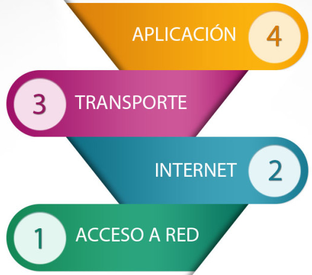

Uno de los servicios mas utilizado en Internet ha sido WWW o "la web", la confusión entre estos dos términos es muy habitual entre los usuarios del Internet. La WWW se define como un conjunto de protocolos que permite hacer una consulta remota de archivos de hipertexto de manera sencilla. Éste tipo de consulta fue un desarrollo posterior (1990), el cual utiliza Internet como medio de transmisión.
Por tanto podemos decir que en Internet existen muchos otros servicios y protocolos, además de la web: el envío de correo electrónico (SMTP), la transmisión de archivos (FTP y P2P), las conversaciones en línea (IRC), la mensajería instantánea y presencia, la transmisión de contenido y comunicación multimedia-telefonía, televisión, los boletines electrónicos , el acceso remoto a otros dispositivos o los juegos en línea.
Los protocolos son reglas de comunicación las cuales permiten que el flujo de información entre equipos que utilizan lenguajes diferentes, por ejemplo, dos ordenadores conectados dentro de la misma red pero con diferentes protocolos no pudieran comunicarse entre sí jamás, para ello necesitarían que ambas “hablasen” el mismo idioma.
Protocolo TCP/IP
Es realmente un conjunto de protocolos, donde los más conocidos son TCP (Transmission Control Protocol o protocolo de control de transmisión) e IP (Internet Protocol o protocolo Internet). Dicha conjunto o familia de protocolos es el que se utiliza en Internet.
Internet es un conglomerado muy amplio y extenso en el que se encuentran ordenadores con sistemas operativos incompatibles, redes más pequeñas y distintos servicios con su propio conjunto de protocolos para la comunicación. Ante tanta diversidad resulta necesario establecer un conjunto de reglas comunes para la comunicación entre estos diferentes elementos y que además optimice la utilización de recursos tan distantes. Este papel lo tiene el protocolo TCP/IP.

El Internet Protocol version 4 (IPv4) (en español: Protocolo de Internet versión 4) es la cuarta versión del protocolo Internet Protocol (IP), y la primera en ser implementada a gran escala. IPv4 usa direcciones de 32 bits, limitándola a 2^{32} = 4.294.967.296 direcciones únicas, muchas de las cuales están dedicadas a redes locales (LAN). Debido al crecimiento enorme que ha tenido Internet (mucho más de lo que esperaba, cuando se diseñó IPv4), ya hace varios años se vio que escaseaban las direcciones IPv4. Esta limitación ayudó a estimular el impulso hacia IPv6, que está actualmente en las primeras fases de implantación, y se espera que termine reemplazando a IPv4.
{kind=link}